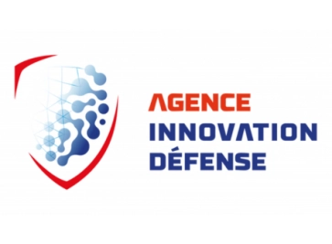
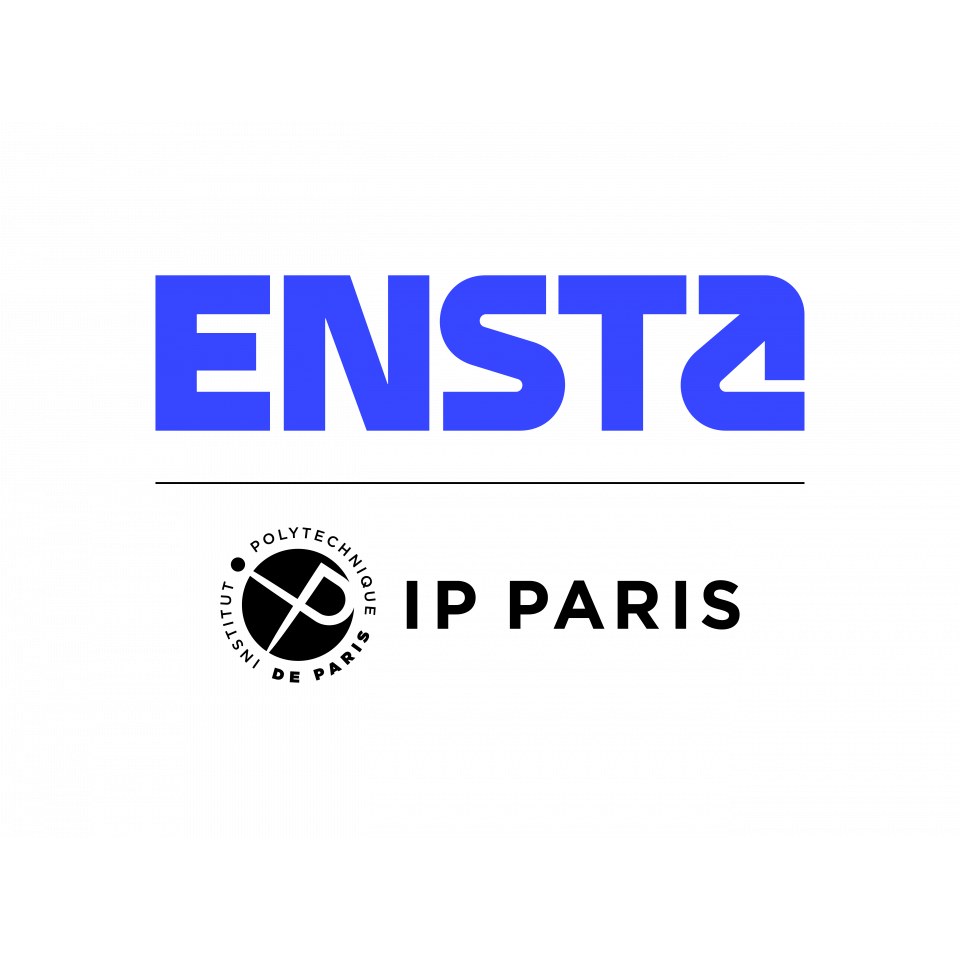
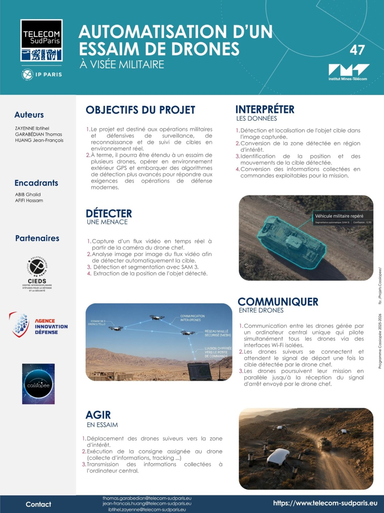

ContexteContext
Le projet vise à automatiser une logique d’essaim dans un cadre académique de défense : un drone chef détecte une cible, les informations sont interprétées, puis des drones suiveurs reçoivent des consignes de déplacement ou de suivi.
The project aimed to automate a swarm logic in an academic defence-oriented setting: a lead drone detects a target, the information is interpreted, then follower drones receive movement or tracking instructions.
Ce que j’ai faitWhat I did
- Travail sur la détection et la localisation d’une cible à partir du flux vidéo du drone chef.
- Conversion de la zone détectée en région d’intérêt exploitable pour la mission.
- Contribution à la logique de communication entre drones : transmission des informations collectées et consignes aux drones suiveurs.
- Utilisation de drones Tello et Tello EDU pour ancrer le projet dans un environnement matériel simple, testable et documentable.
- Worked on target detection and localization from the lead drone video stream.
- Converted detected zones into exploitable regions of interest for the mission.
- Contributed to drone-to-drone communication logic: transmission of collected information and instructions to follower drones.
- Used Tello and Tello EDU drones to keep the project grounded in a simple, testable and documented hardware environment.
PipelinePipeline
Flux vidéo du drone chef → détection et localisation de la cible → extraction d’une région d’intérêt → conversion en informations exploitables → transmission aux drones suiveurs → déplacement ou suivi en essaim.
Lead drone video stream → target detection and localization → region-of-interest extraction → conversion into actionable information → transmission to follower drones → movement or swarm tracking.
RésultatsResults
Le projet a été présenté sous forme de poster et de restitution technique devant des chercheurs, des étudiants des écoles de l’Institut Polytechnique de Paris, notamment Polytechnique, ENSTA et Télécom Paris, ainsi que des acteurs de la défense. Il a également été salué par Télécom SudParis lors de la présentation des projets CASSIOPEE.
The project was presented through a technical poster and final presentation to researchers, students from Institut Polytechnique de Paris schools, including Polytechnique, ENSTA and Télécom Paris, as well as defence stakeholders. It was also highlighted by Télécom SudParis during the CASSIOPEE project presentations.
VisuelsVisual material
